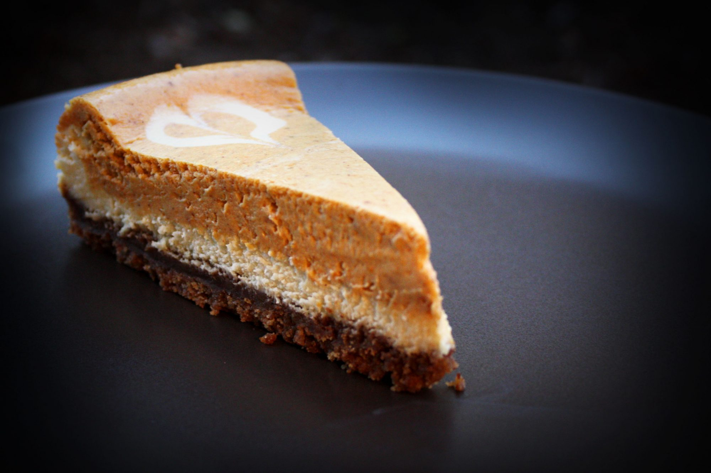

Double Layer Pumpkin Cheesecake

A treat not just for celebrations
A great alternative to pumpkin pie, especially for those cheesecake fans
out there. Serve topped with whipped cream.
Ingredients
- 2 (8 ounce / 227g) packages cream cheese, softened
- ½ cup (113g) white sugar
- ½ teaspoon vanilla extract
- 2 eggs
- 1 (9 inch / 23cm) prepared graham cracker crust
- ½ cup (113g) pumpkin puree
- ½ teaspoon ground cinnamon
- 1 pinch ground cloves
- 1 pinch ground nutmeg
- ½ cup (113g) frozen whipped topping, thawed
Steps
- Preheat oven to 325° F (165° C)
-
In a large bowl, combine cream cheese, sugar and vanilla. Beat until
smooth. Blend in eggs one at a time. Remove 1 cup of batter and spread
into bottom of crust; set aside.
-
Add pumpkin, cinnamon, cloves and nutmeg to the remaining batter and
stir gently until well blended. Carefully spread over the batter in the
crust.
-
Bake in preheated oven for 35 to 40 minutes, or until center is almost
set. Allow to cool, then refrigerate for 3 hours or overnight. Cover
with whipped topping before serving.
Nutrition Info
- Prep: 30 min
- Cook: 40 min
- Additionals: 3 h
- Total: 4 h 10 min
- Yield: 8 servings
- Servings: 8
-
Per Serving: 426 calories; protein 7.2g; carbohydrates
35.5g; fat 29g; cholesterol 108.1mg; sodium 354.4mg
Return to the Homepage